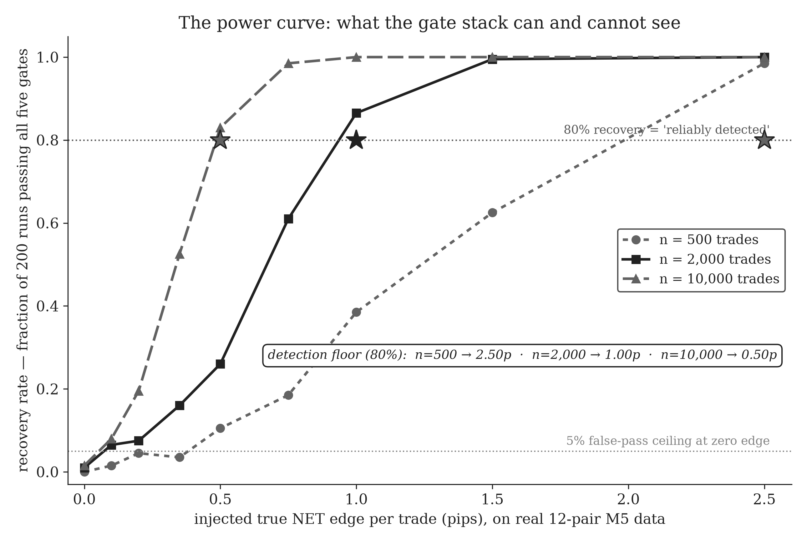

Could this apparatus even find an edge?
A validation stack that only ever says "no" proves nothing by itself. "No" is also what a broken instrument says — a thermometer stuck at zero will report a cold snap forever, whatever the weather is doing. The book's eighty-one experiments end in a negative verdict, so the verdict is only as strong as the instrument's eyesight, and that eyesight had to be measured rather than assumed.
So the instrument was given a positive control, the way a lab assay is. Synthetic edges of known, controlled size were injected into the real twelve-pair price data — an artificial signal worth exactly half a pip per trade net, one pip, two — and the full validation stack was run blind against each size, two hundred runs per point. The stack did not know which runs contained a planted edge or how large it was; it just did what it does to every candidate strategy. The fraction of runs in which the gates recover the planted edge, plotted against how large it is, is the power curve.

The floor it measured: at the project's standard 2,000-trade evidence bar, the stack reliably detects an injected edge of 1.0 pip per trade or larger. At 10,000 trades the floor drops to 0.5; at 500 trades it rises to 2.5. At half a pip on the standard bar it catches roughly one attempt in four; at a third of a pip, one in six — nearly blind below about a fifth of a pip at any trade count the project could reach. And with zero edge planted, fewer than two percent of runs pass: the instrument does not invent edges either.
The floor is published deliberately, because it is what the book's negative verdict actually means. Every "no" in the eighty-one experiments is not a proof of zero — it is "no edge larger than the floor." If a smaller edge exists in the field the book scanned, it lives below the resolution of the instrument, in a region where the spread costs more than the signal earns. A measured floor, with the emptiness above it established; nothing stronger is claimed.
The usual caveats attach. The curve is measured on this data, this gate stack, and one mechanical way of planting an edge; a differently shaped edge — rarer, lumpier, concentrated in one regime — could be seen more easily or less. And a sub-two-percent false-pass rate at zero edge is small, not zero: run enough candidates and some will slip through, which is exactly what happened to three of this book's own headline results before the record caught them.
The same instrument, pointed at this book's own claims, forced three published corrections: the retractions. The full run of what it was pointed at is in the 81 experiments. The whole story — the apparatus, the floor, and the verdict — is in the book.